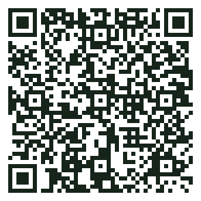
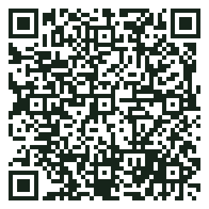

Formazione · i tuoi due link
Da qui parte tutto
Due pulsanti. Il primo serve per lavorare, il secondo per vedere come vai. Ognuno si apre in una scheda nuova: questa pagina resta qui, e ci puoi tornare quando vuoi.
1 · Qui lavori
Gestionale di prova
È il gestionale del Convitto, ma con convittori inventati: puoi provare tutto, senza paura di sbagliare. Entra con il nome utente e la password scritti sul tuo cartellino.
▶ Apri il gestionale di prova
2 · Qui vedi come vai
Missione Convitto
Tocca il tuo nome: trovi le tue missioni, i punti e la caccia al tesoro. Non serve password. È facoltativo: i punti compaiono comunque sullo schermo grande.
▶ Apri Missione Convitto
Se compare «Impossibile aprire il file in questo momento»
Chiudi quella scheda. Sul computer premi Ctrl + Maiusc + N; sul telefono apri una scheda in incognito. Nella nuova finestra riscrivi convitto-costaggini.github.io/formazione/link.html e riprova.